Project Kiosk
Gameplay
Description
Project Kiosk is a serious game developed in collaboration with DIT-Lab and DUO (Dienst Uitvoering Onderwijs). Its purpose is to introduce players to Self-Sovereign Identity (SSI) and digital identity management through an interactive kiosk simulation. By engaging with characters and handling everyday situations, players learn about personal data, digital identity, and privacy in an accessible and practical way.
Players take on the role of a kiosk operator, interacting with different characters across five in-game days. Each character brings unique situations and requests that require the player to make decisions about how personal information is handled. As the game progresses, these scenarios become more complex, encouraging players to apply what they have learned about digital identity, data sharing, and privacy.
My Role
My contributions to Project Kiosk covered research, technical development, and collaboration. I was involved throughout the project, from investigating the subject and defining design requirements to implementing the game and refining it through testing and feedback.
Research & Design
One of my main responsibilities was leading the research and translating our findings into practical design decisions. We followed the Double Diamond framework to structure our process, moving from exploring the problem and identifying user needs to developing and refining our solution.
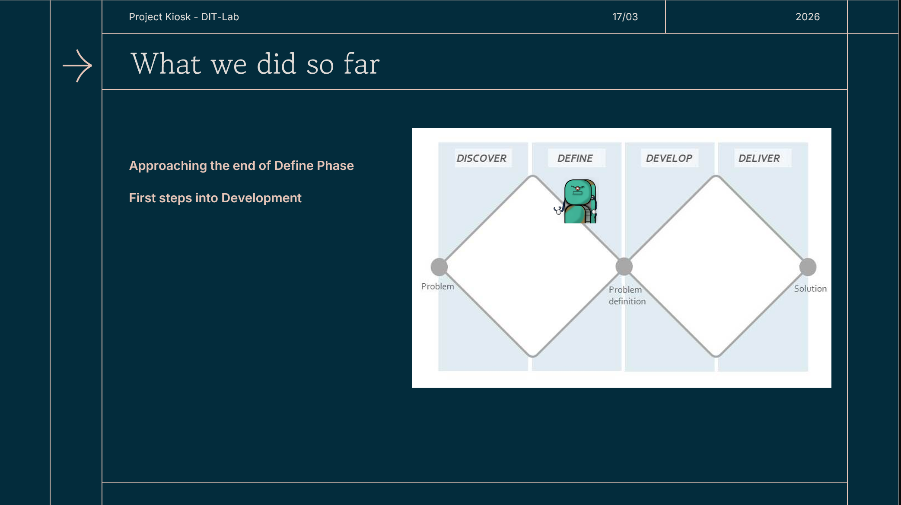
I organised and conducted interviews with three SSI experts and members of our target audience. The goal was to better understand the subject, its challenges, and how people perceive and interact with digital identity. I analysed the responses, identified common themes, and translated the findings into research conclusions and design requirements that guided the development of Project Kiosk.
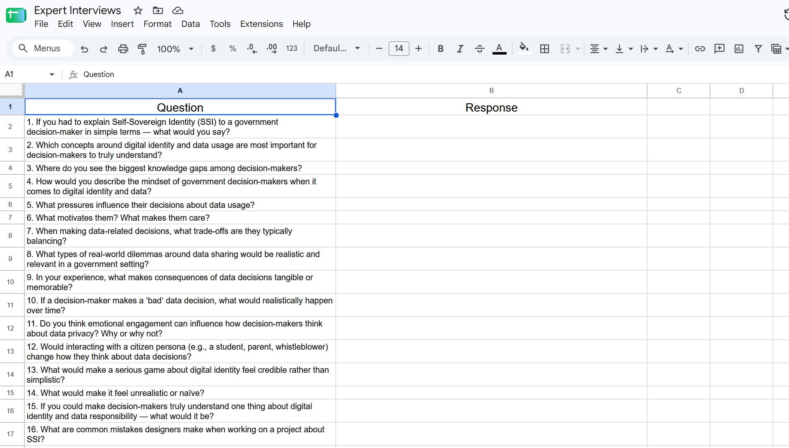
I also participated in playtesting sessions, gathering feedback to evaluate how effectively the game communicated its learning objectives. These sessions helped us identify areas for improvement and make informed design decisions throughout development.
Alongside the research, I created a UI Style Guide to establish a consistent visual language across the game. This provided a shared reference for the interface and helped maintain visual consistency during development.
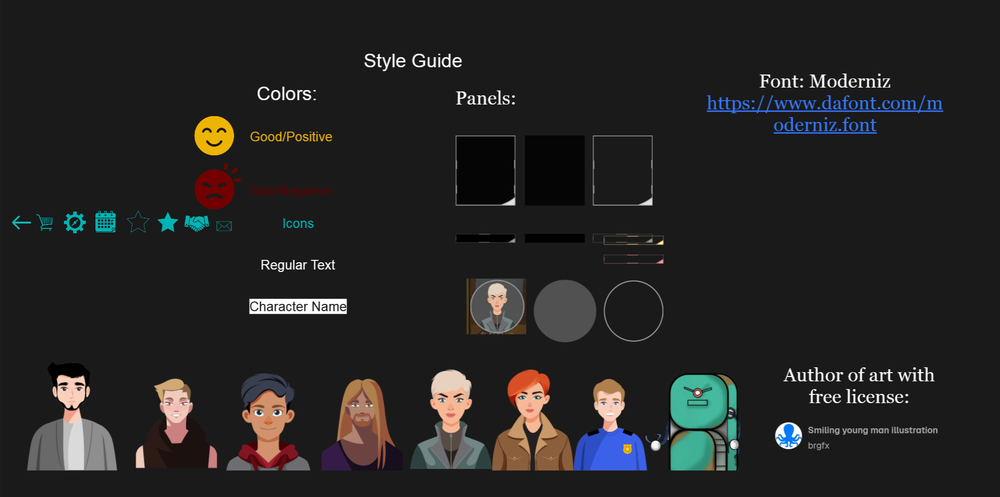
Technical Development
I was responsible for the technical implementation of Project Kiosk in Unity. After evaluating the previous version of the project, I identified that much of its functionality relied on hardcoded cases and specific scenarios. This made the game difficult to maintain, expand, and adapt to new requirements. I concluded that a full rebuild was necessary to create a more flexible and reliable foundation.
One of the main challenges was translating the characters from their original character sheets into functional in-game systems. I developed custom classes in Unity to represent each character and their individual properties. I also implemented character-specific and global variables to track information and control the effects of conversations. This allowed dialogue choices and interactions to influence the game state and carry consequences across different scenarios.
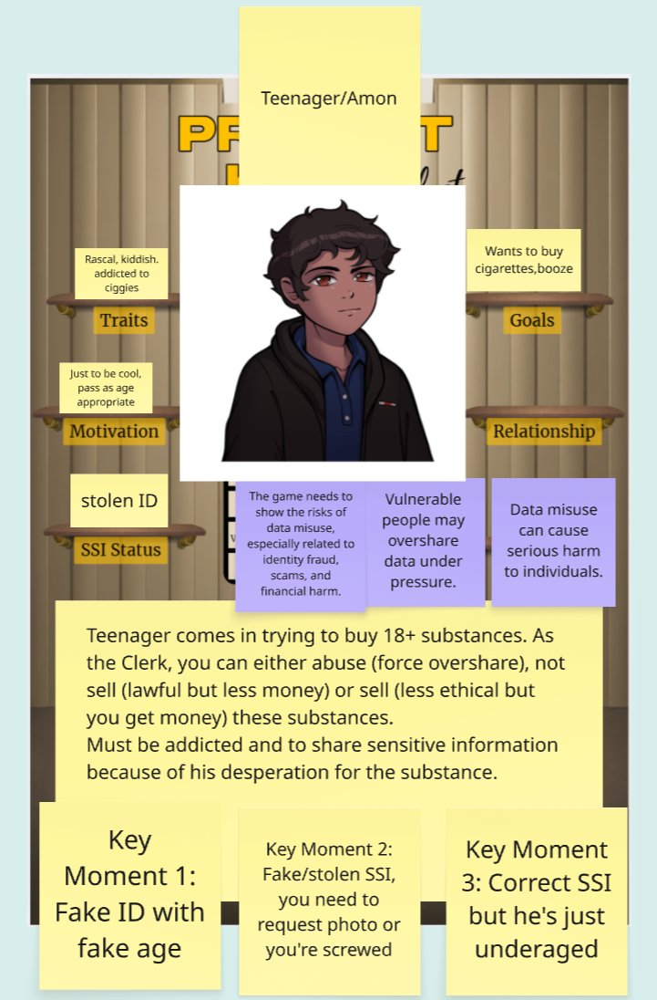
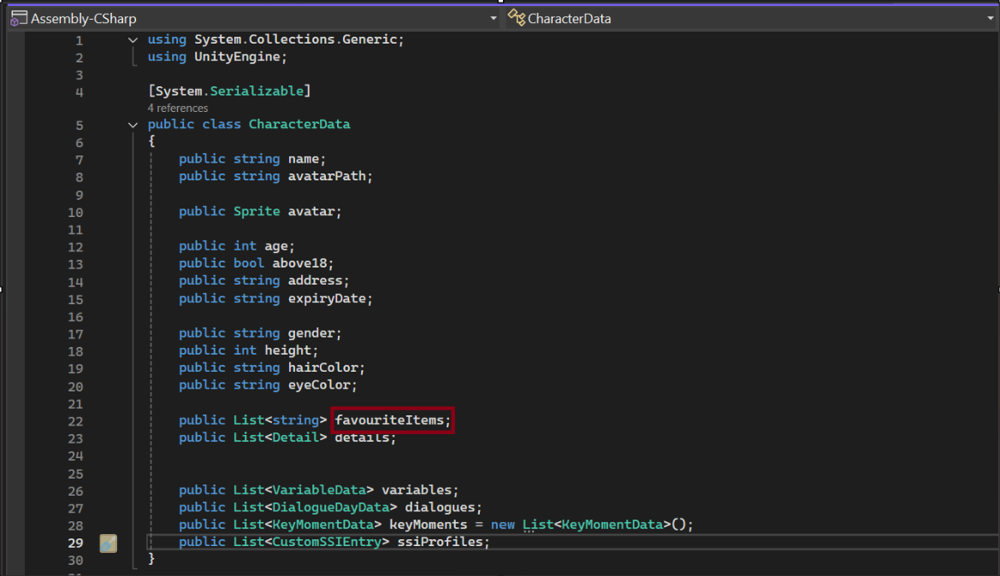
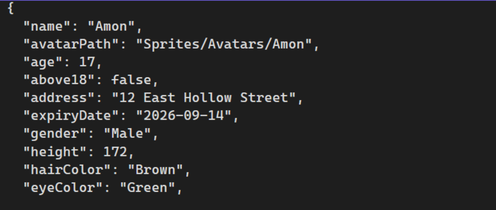
The process of translating character sheets into Unity classes and configurable JSON data.
Another important requirement was making the project accessible to people without experience in Unity. Neither my narrative designer nor the stakeholders at DIT-Lab had experience working with the engine, so I wanted to avoid making them dependent on me for every narrative change.
To achieve this, I made the game fully JSON-driven. Characters, their properties, dialogue options, and conversation effects could all be configured externally without modifying the underlying Unity code. This separated the narrative content from the technical implementation, allowing the team to make changes more independently.
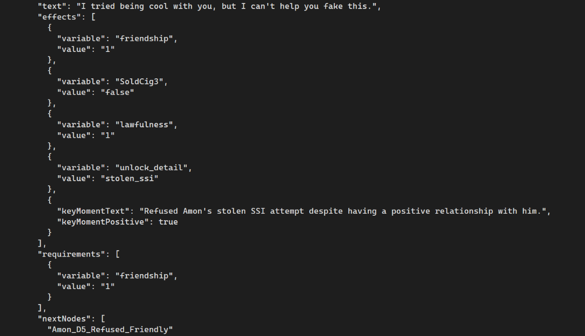
To support this workflow, I also wrote a guide explaining how to structure and edit the JSON files. This provided the narrative designer and stakeholders with the documentation needed to review, modify, and expand the game's content independently.
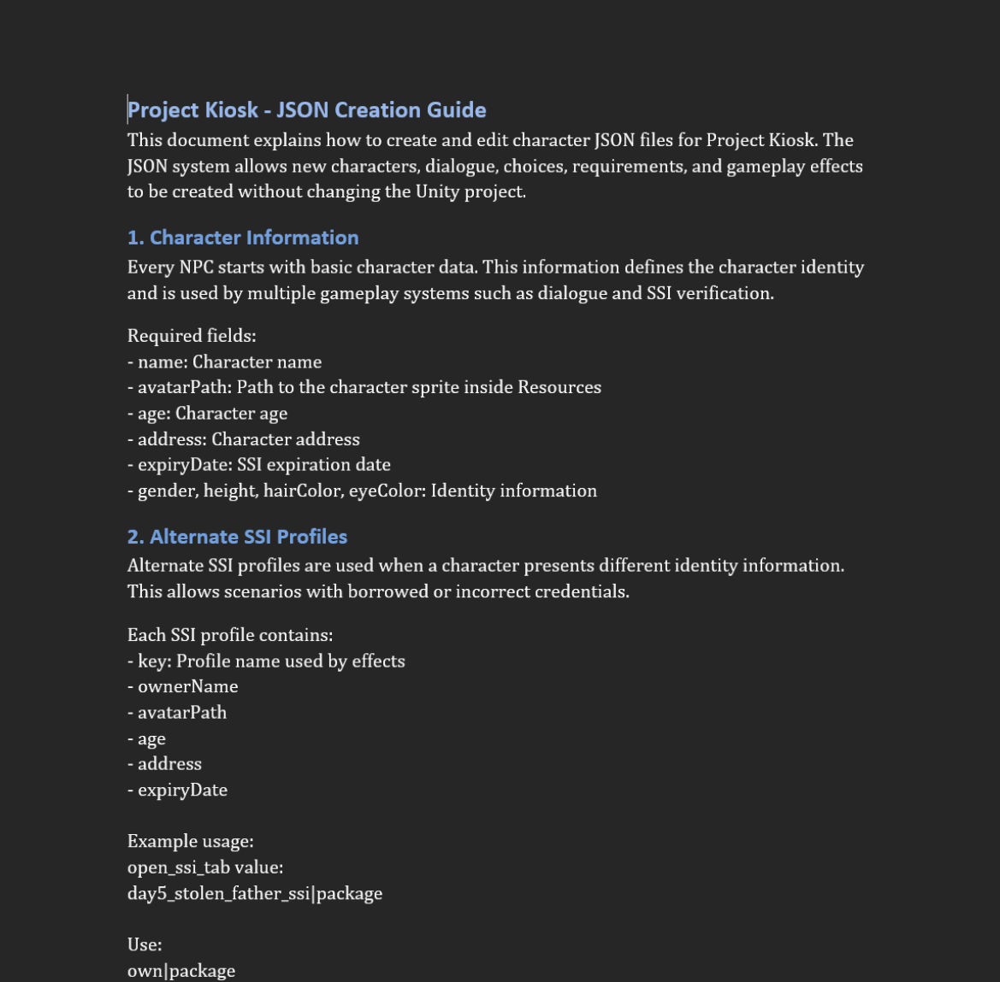
Beyond these systems, I also worked on the user interface, dialogue systems, and player interactions. This included resolving technical challenges involving dynamically generated UI elements, JSON data handling, and preparing the game for WebGL deployment. These tasks pushed me to investigate unfamiliar problems and develop solutions that were reliable, maintainable, and suited to the project's requirements.
Collaboration & Problem Solving
Project Kiosk was developed in collaboration with a narrative designer, requiring us to combine two different perspectives throughout development. My responsibility was to translate narrative ideas and gameplay requirements into functional systems while preserving the intended player experience.
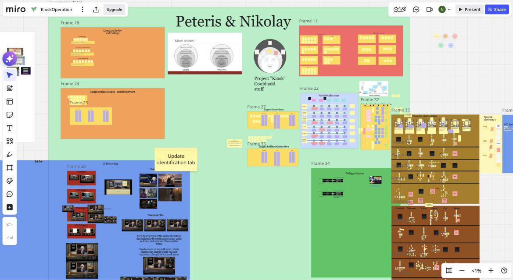
Since we were a small team, organisation and prioritisation were especially important. We used a MoSCoW list to distinguish essential features from lower-priority tasks, helping us focus on the most important requirements first.
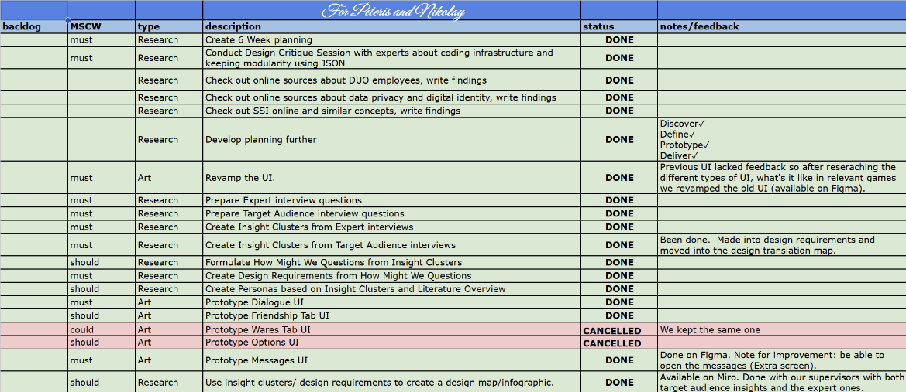
We regularly presented our progress to DIT-Lab through presentations, feedback sessions, and stand-up meetings. These meetings gave us the opportunity to discuss our decisions with stakeholders, receive feedback, and adjust our direction when necessary.
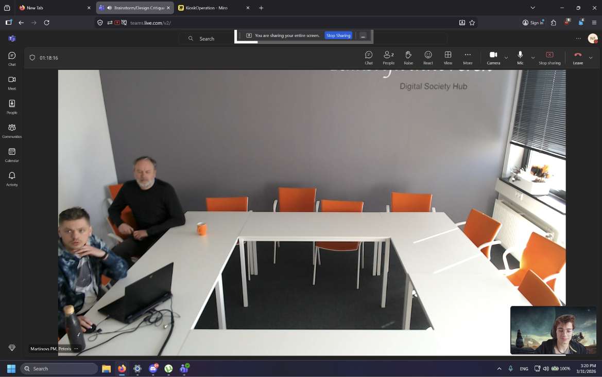
Working through this process significantly improved my problem-solving and communication skills. I learned to approach challenges more systematically, question initial assumptions, use research to support decisions, and adapt solutions based on feedback and testing.